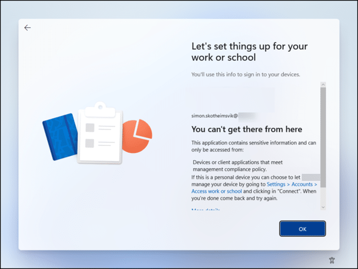
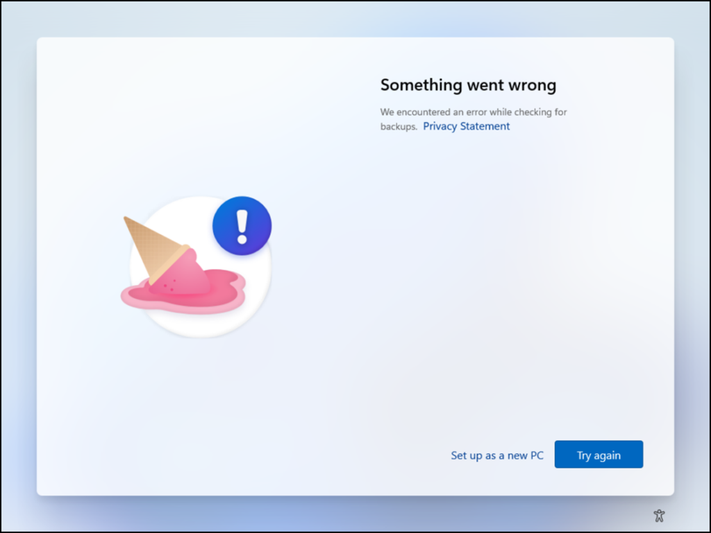
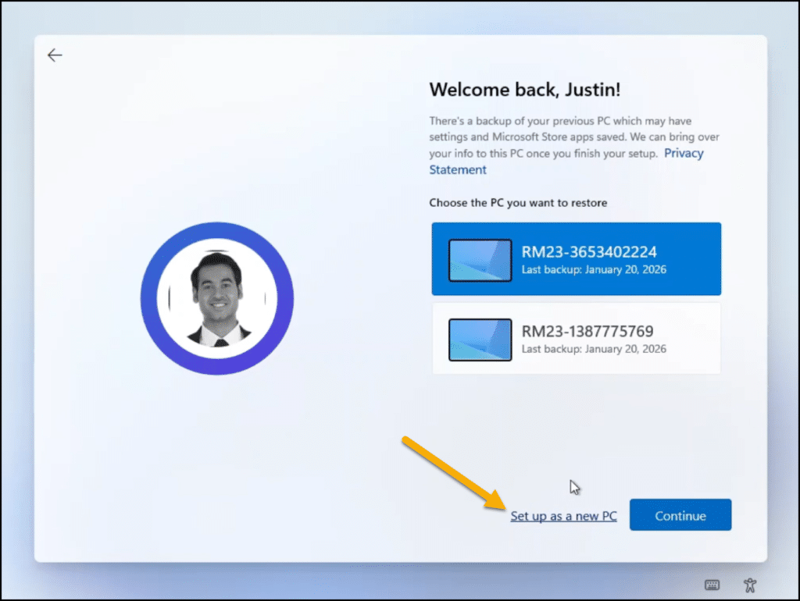
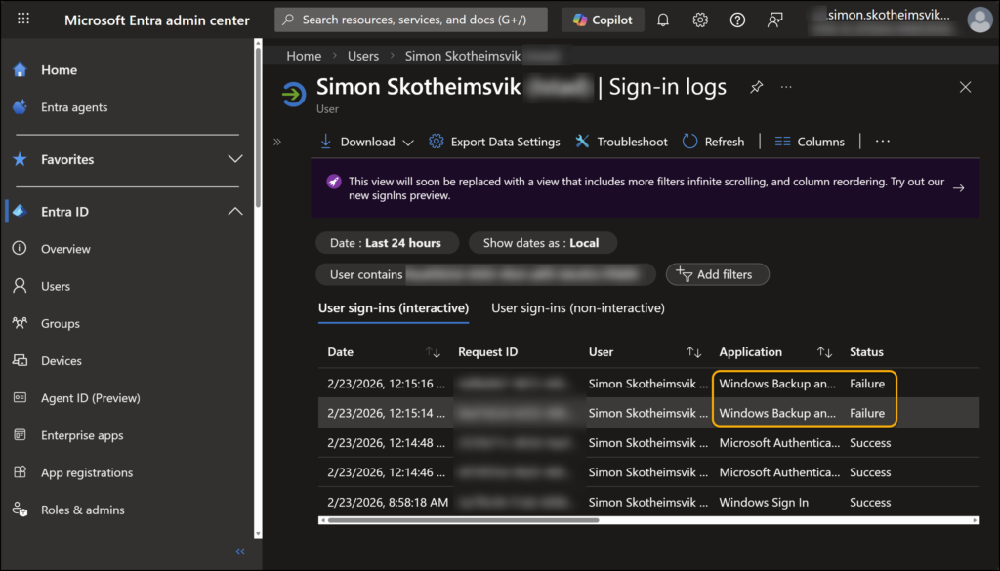
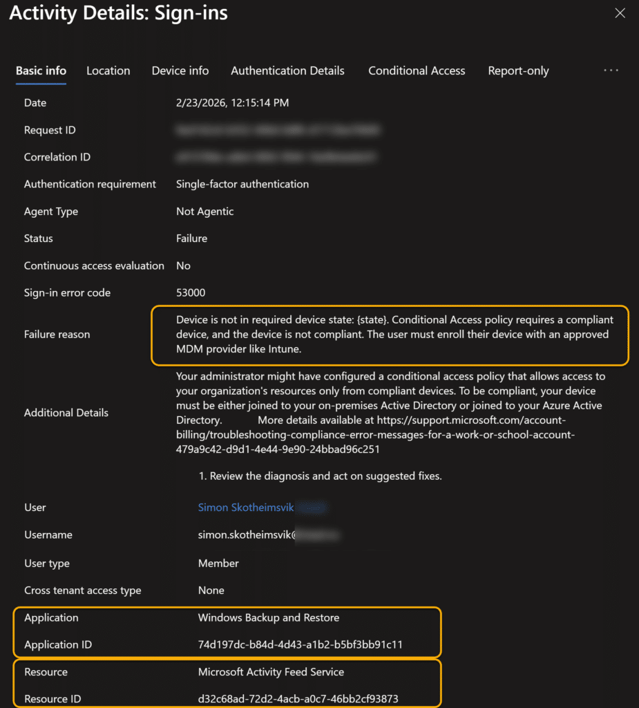
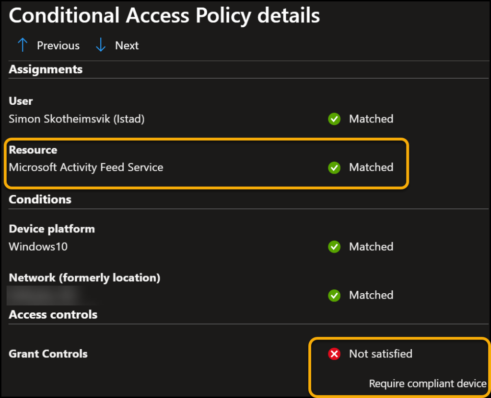
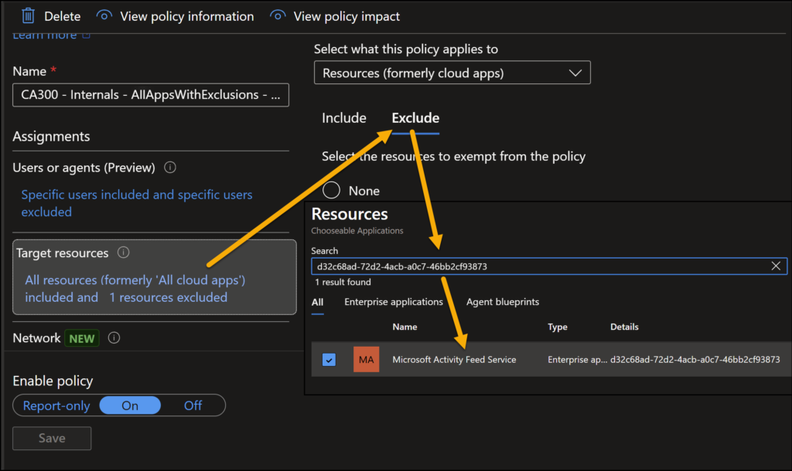

When Windows First Sign‑in Restore finally went GA on February 24th, many of us were eager to bring this slick user‑centric experience into production. After all, giving users the ability to restore their apps and settings directly during Autopilot feels like a major win. Less friction, less hand‑holding, and a more seamless transition between devices.
But as with any new capability, real-world deployments reveal real-world challenges. One particular issue surfaced with a customer who relies heavily on Conditional Access (CA) to enforce compliant‑device access across all applications. This post walks through the symptoms, the root cause, and the fix so you can avoid frustrating Autopilot interruptions in your own rollout.
Background: What “First Sign‑in Restore” Actually Does
The feature is well covered elsewhere, including the official announcement on Tech Community and the Microsoft configuration documentation. Since this has already been broadly blogged during the preview period, we’ll skip the step‑by‑step setup and focus on troubleshooting.
In short:
- During Autopilot OOBE, users can choose to restore apps/settings from a previously backed‑up Windows device.
- The restore interface is part of the Windows Backup and Restore application.
- Behind the scenes, the restore workflow communicates with the first-party Microsoft service called the “Microsoft Activity Feed Service” (App/Resource ID: d32c68ad-72d2-4acb-a0c7-46bb2cf93873). And that last part is where things get interesting.
The Problem: A Brutal Error Message During Autopilot
After enabling the restore experience in Autopilot, users suddenly began hitting an alarming message:

“You can’t get there from here. This application contains sensitive information and can only be accessed from devices or client applications that meet management compliance policy.”
The only selectable button? OK, which loops users right back to a “Try again” button with the famous ice cream cone.

A small link beneath “Set up as a new PC” is technically the escape hatch. But it’s problematic because:
- It is not intuitive at all during Autopilot.
- The wording suggests leaving the Autopilot process entirely.
- Operators fear that clicking it means building a device in violation of company policy.
In reality, this link belongs to the restore UI, not Autopilot. But expecting end users to understand that distinction is unrealistic.

The picture above shows how my test account, Justin Time, should expect the restore option to be presented. You recognize the “Set up as a new PC” option?
Root Cause: Conditional Access Blocking “Windows Backup and Restore”
Digging into the user’s sign‑in logs quickly revealed the issue.

A sign‑in log failure pointing to the Windows Backup and Restore application.

Digging into the details:
- Sign-in error code: 53000
- Failure reason: “Device is not in required device state. Conditional Access policy requires a compliant device, and the device is not compliant.”
- Application: Windows Backup and Restore
- Resource: Microsoft Activity Feed Service
This makes perfect sense: during OOBE and early Autopilot stages, the device has not yet reported compliance. But First Sign‑in Restore tries to authenticate during this window.
Diving down into the CA details for this sign-in log, we find the matching resource and the block caused by the compliant device requirement.

If your CA policy requires a compliant device for all cloud apps, you have unintentionally blocked the restore process.
The Fix: Add an Exception for Microsoft Activity Feed Service
The solution was straightforward once identified: Exclude the “Microsoft Activity Feed Service” from the Conditional Access policy enforcing compliant devices.

Once this resource was added as an exception:
- Autopilot flowed normally.
- The First Sign‑in Restore page appeared as expected.
- End users no longer hit the compliance‑related roadblock.
This aligns with how other foundational services (e.g., enrollment, device registration) often require CA exclusions to avoid chicken‑and‑egg situations.
First Sign‑in Restore Summary
If you plan to enable Windows First Sign‑in Restore in a tenant with strict Conditional Access enforcement, be prepared to:
- Review sign‑in logs for Windows Backup and Restore.
- Identify CA policies requiring compliant devices.
- Add an exclusion for Microsoft Activity Feed Service.
Doing so ensures that Autopilot completes smoothly and that users enjoy a painless restore experience without misleading error messages.